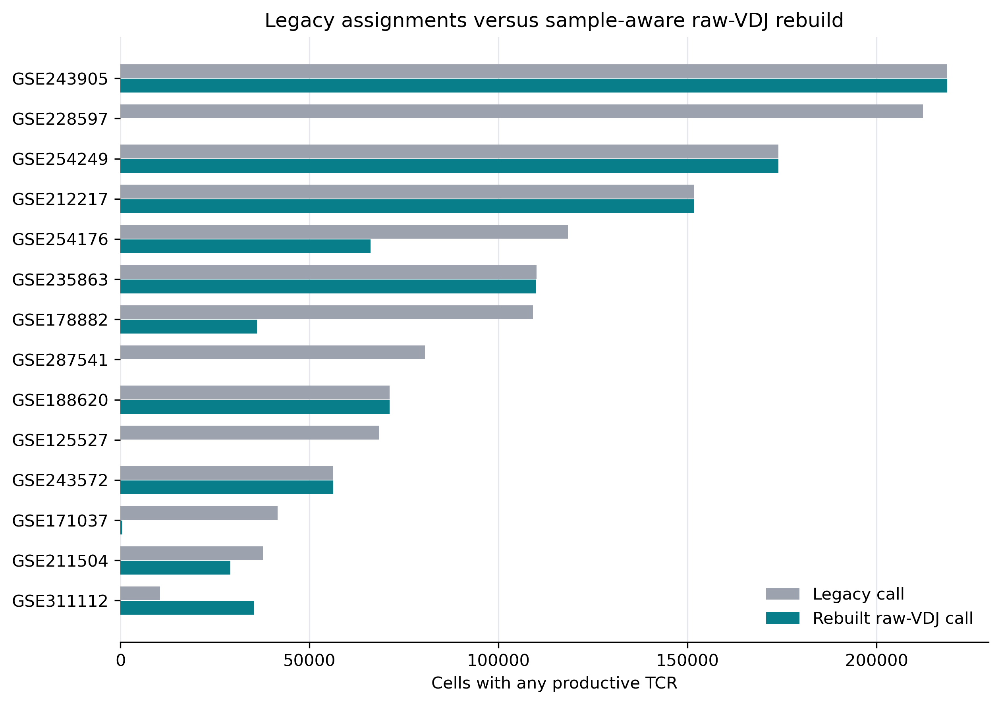
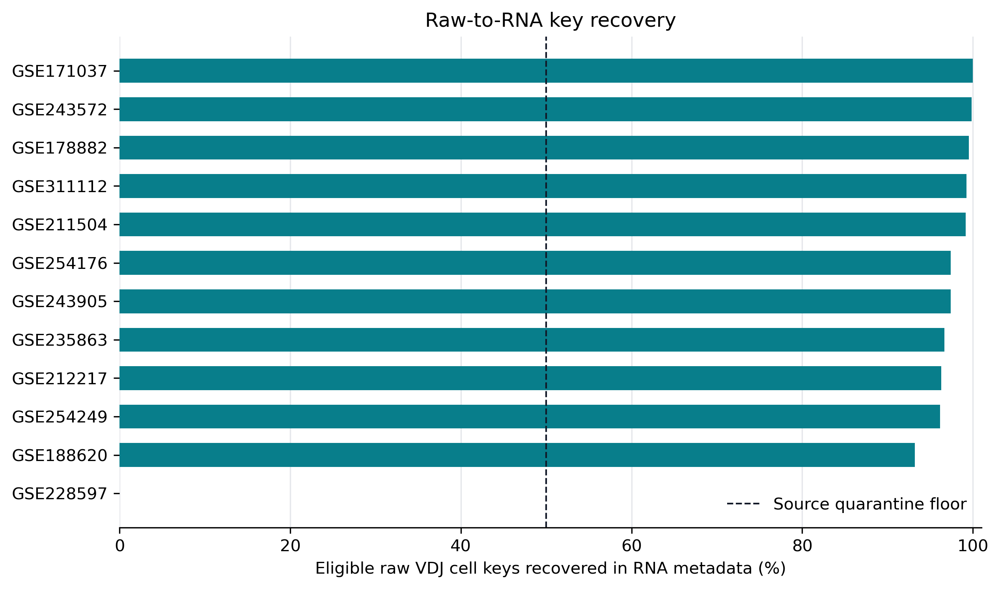
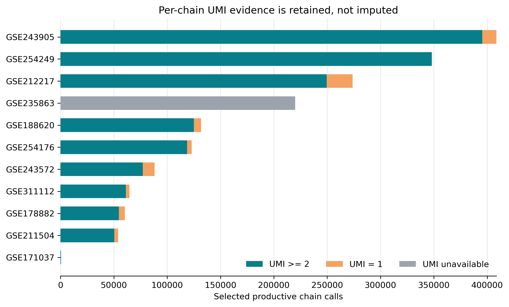
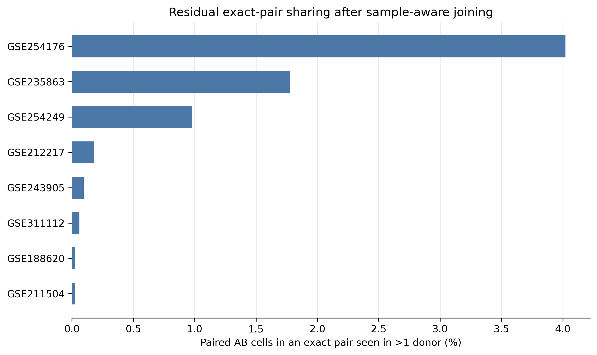

Sample-aware TCR join rebuild
Productive raw VDJ contigs were rebuilt against RNA metadata using only sample_id + barcode_core. Per-chain UMI and read support are preserved for TRA, TRB, TRG, and TRD; missing support remains null.
Legacy assignments versus raw-VDJ rebuild

Rebuild method


The four-chain sidecar contains CDR3 amino acid/nucleotide sequence, V/D/J calls, clone id, UMI, reads, support-availability flags, selected contig id, productive-contig multiplicity, and raw source-file provenance.
Source-level outcome
| Source | Outcome | Legacy any TCR | Rebuilt any TCR | Rebuilt paired AB | Raw-key recovery | Chain calls with UMI |
|---|---|---|---|---|---|---|
| GSE125527 | Quarantined | 68,439 | 0 | 0 | NA | 0 |
| GSE171037 | Pass | 41,536 | 473 | 0 | 100.0% | 473 |
| GSE178882 | Pass | 109,136 | 36,102 | 24,191 | 99.5% | 60,293 |
| GSE188620 | Pass | 71,233 | 71,233 | 60,624 | 93.2% | 131,857 |
| GSE211504 | Pass | 37,635 | 29,121 | 24,833 | 99.2% | 53,954 |
| GSE212217 | Pass | 151,676 | 151,676 | 122,135 | 96.3% | 273,811 |
| GSE228597 | Quarantined | 212,272 | 0 | 0 | 0.0% | 0 |
| GSE235863 | Pass, 110 rows quarantined | 110,081 | 109,985 | 109,985 | 96.7% | 0 |
| GSE243572 | Pass | 56,322 | 56,322 | 31,930 | 99.9% | 88,252 |
| GSE243905 | Pass | 218,658 | 218,658 | 189,985 | 97.4% | 408,643 |
| GSE254176 | Pass | 118,328 | 66,110 | 56,880 | 97.4% | 122,990 |
| GSE254249 | Pass | 174,045 | 174,045 | 174,045 | 96.1% | 348,090 |
| GSE287541 | Quarantined | 80,545 | 0 | 0 | NA | 0 |
| GSE311112 | Pass | 10,435 | 35,266 | 29,403 | 99.2% | 64,669 |
GSE235863 has 110 duplicated RNA sample_id + barcode_core rows. Their rebuilt receptor fields are blank and they are excluded from receptor truth, but retained in the replacement table so stale assignments can be cleared.
Residual biological and annotation checks

Exact pair and author-label audit
| Source | Paired AB | Cross-donor cells | Cross-donor % | Author NK | NK + rebuilt AB | NK + AB % |
|---|---|---|---|---|---|---|
| GSE125527 | 0 | 0 | NA | 5,471 | 0 | 0.00% |
| GSE178882 | 24,191 | NA | NA | 0 | 0 | NA |
| GSE188620 | 60,624 | 16 | 0.03% | 0 | 0 | NA |
| GSE211504 | 24,833 | 6 | 0.02% | 0 | 0 | NA |
| GSE212217 | 122,135 | 223 | 0.18% | 0 | 0 | NA |
| GSE228597 | 0 | 0 | NA | 116,837 | 0 | 0.00% |
| GSE235863 | 109,985 | 1,957 | 1.78% | 24,676 | 0 | 0.00% |
| GSE243572 | 31,930 | NA | NA | 0 | 0 | NA |
| GSE243905 | 189,985 | 182 | 0.10% | 501 | 245 | 48.90% |
| GSE254176 | 56,880 | 2,287 | 4.02% | 0 | 0 | NA |
| GSE254249 | 174,045 | 1,707 | 0.98% | 0 | 0 | NA |
| GSE287541 | 0 | 0 | NA | 24,472 | 0 | 0.00% |
| GSE311112 | 29,403 | 18 | 0.06% | 0 | 0 | NA |
Staged metadata replacement
The staged sidecar contains all rows from the 11 passing sources. Receptor-truth eligibility is separate from metadata-replacement eligibility, allowing unsafe legacy calls to be cleared without converting ambiguous rows into negative training truth.
| Source | Replacement rows | TCR-truth eligible | Validated productive TCR |
|---|---|---|---|
| GSE171037 | 60,981 | 60,981 | 473 |
| GSE178882 | 109,138 | 109,138 | 36,102 |
| GSE188620 | 151,027 | 151,027 | 71,233 |
| GSE211504 | 37,637 | 37,637 | 29,121 |
| GSE212217 | 292,271 | 292,271 | 151,676 |
| GSE235863 | 286,843 | 286,733 | 109,985 |
| GSE243572 | 268,664 | 268,664 | 56,322 |
| GSE243905 | 413,696 | 413,696 | 218,658 |
| GSE254176 | 118,332 | 118,332 | 66,110 |
| GSE254249 | 601,436 | 601,436 | 174,045 |
| GSE311112 | 139,112 | 139,112 | 35,266 |
Integrated_dataset/tables/tcr_join_rebuild/validated_tcr_replacement_sidecar.parquetSHA-256:
6a7450b4edb0ad2e4796a98e3bb9f9a6fffc059f723c34bcdf2f260e65ddf253This report evaluates data integrity of TCR assignment. It does not evaluate or promote a gdTAI classifier, threshold, or atlas inference.